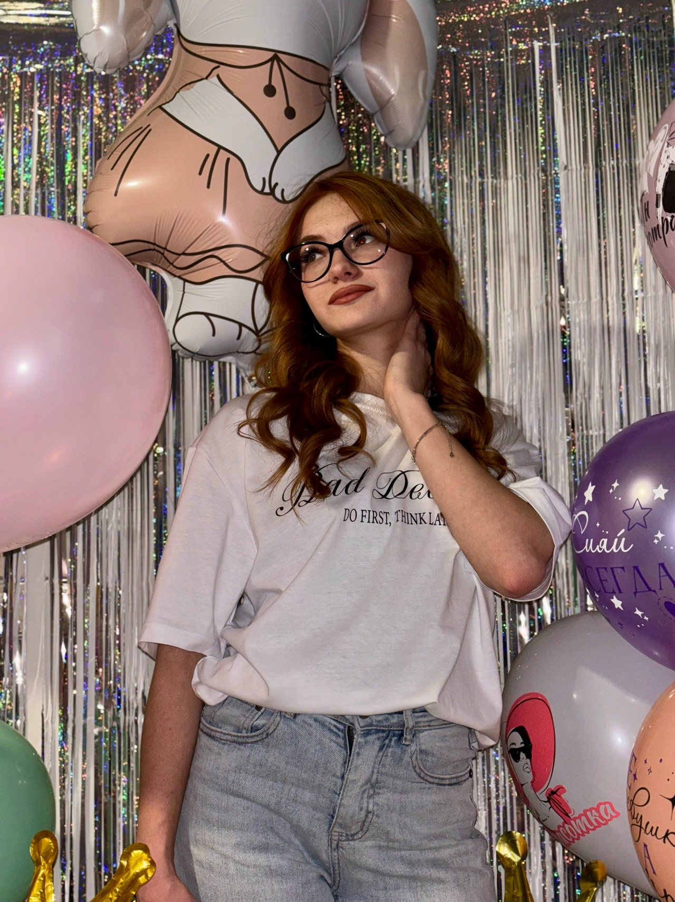

Здравствуйте! Рад, что вы заглянули на мою страницу. Давайте познакомимся!

Епишина Ксения
студент 1 курса, группа бРПО-261
Электронная почта: ksenniya.yepishina@mail.ru
Рабочая страница: Страница VK
Сайт института: Воронежский государственный технический университет
Я учусь в ВГТУ — Воронежском государственном техническом университете, одном из лучших технических вузов Черноземья. Университет основан в 1956 году и выпускает специалистов в области IT, радиоэлектроники, строительства, экономики и многих других направлений.
Официальный сайт: https://cchgeu.ru
Я учусь в группе бРПО-261. Направление подготовки — «Программная инженерия».
Наша группа — отзывчевая и веселая. Мы изучаем:
В будущем я хочу стать разработчиком программного обеспечения и связать свою жизнь с IT-сферой. Моя профессия будет связана с проектированием программ, созданием веб-сервисов и разработкой автоматизированных систем.
Наибольший интерес для меня представляют следующие направления:
Чтобы стать хорошим специалистом в этой области, необходимо постоянно учиться, развивать логическое мышление и уметь находить нестандартные решения для сложных задач.
В свободное от учёбы время я увлекаюсь:
Немного фактов обо мне в виде таблицы:
| Параметр | Значение |
|---|---|
| ФИО | Епишина Ксения |
| Курс | 1 |
| Группа | бРПО-261 |
| ВУЗ | ВГТУ |
| Город | Воронеж |
| Любимый язык программирования | Python |
| Хобби | Спорт, слушание музыки, рисование |
«memento mori - помни о смерти».